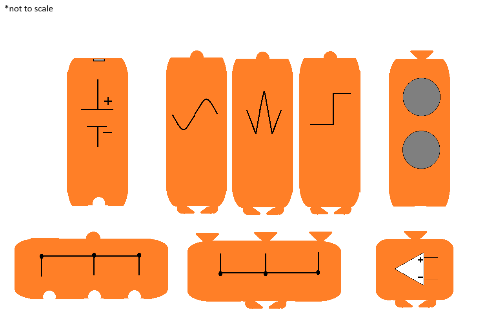
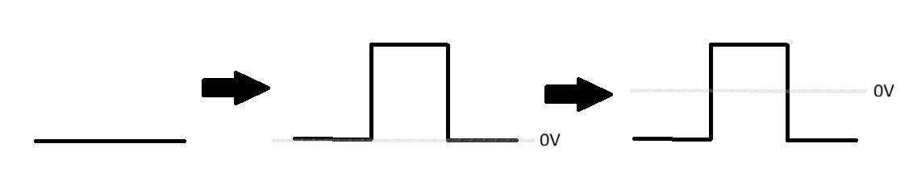
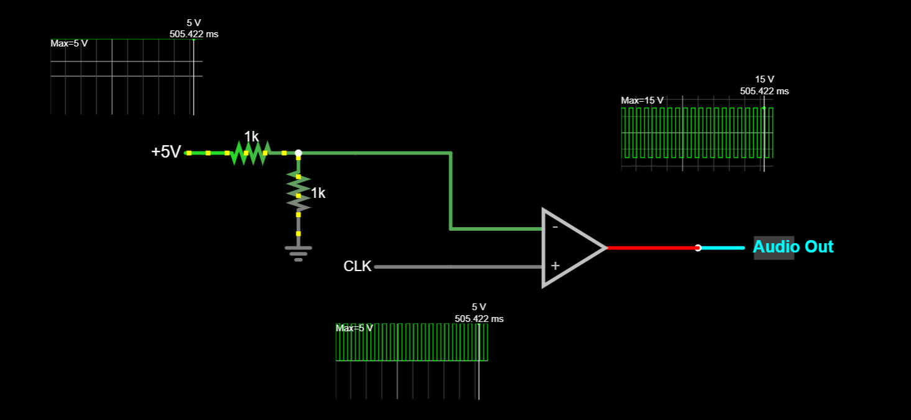
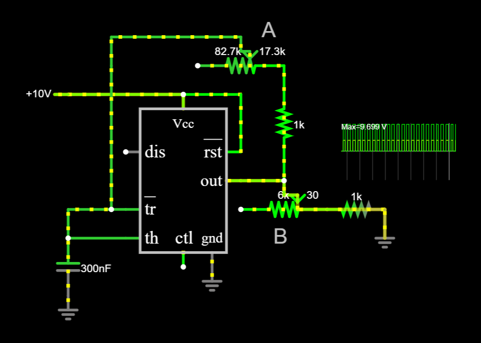
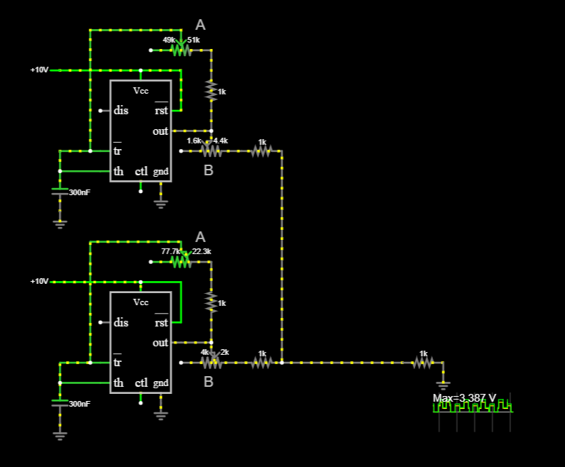
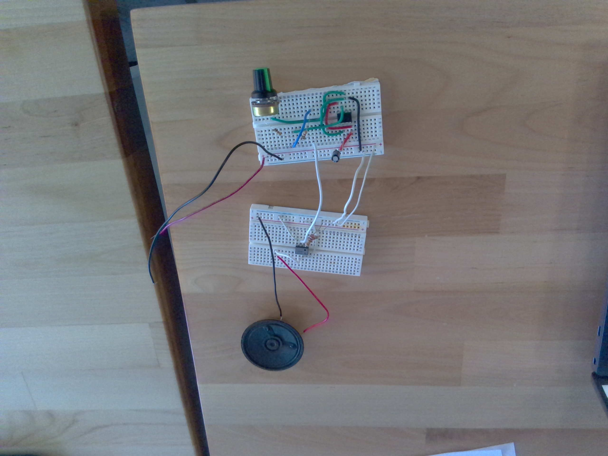
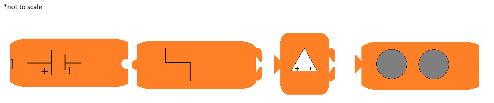

Function Generator Blocks
Description:
A series of blocks which act as various parts of a speaker circuit, with 2 function blocks [square, sawtooth], 2 connector blocks, 1 battery block, 1 opamp block, and, 1 speaker output block.
Goal:
To help people of all ages understand basic circuit componants and how they affect a wave function.
Concept:
This picture shows the rough 1st draft as a pitch to our instructors:

[We decided to scrap the sine wave generator]
This next image shows the resulting wave after the square wave generator and opamp blocks are put together:

The opamp block is a simple opamp but with a voltage divider on the reference terminal, allowing the output to cycle between the - max voltage and the + max voltage.

The changes in the wave function can be heard with the speaker, encouraging the user to expirement to get the new sounds.
Anyway,
The terminal for the opamp's contacts is designed to fit in either the connector block output or the output of a function generator.
On the terminal there is 3 contacts, signal, reference, and ground.
[The plan is just to use copper tape with wires soldered to 3 different contacts, one on the top, left, and right sides.]
Regarding the function generator, for at least the square wave and sawtooth wave we are going to use a simple 555 timer clock.

In this circuit, the amplitude of the wave can be transformed with potentiometer B, and the frequency of the wave function can be changed with potentiometer A, otherwise this is a stock 555 timer clock.
Sweet,
So what is the point of the connector blocks?
The point of the connector blocks is so people so can expirement with complicated wave transformations and make their own custom sounds.
In this circuit we mimic 2 waves added up in parallel with differing frequencies,

Progress Made:
Due to problems with our 3D printer, our first box, the square wave generator, has been delayed.
But we do have the STL file for the square wave generator box.
Download Top Case
Download Bottom Case
The following photo shows the circuit we have designed so far,

This represents that circuit,
